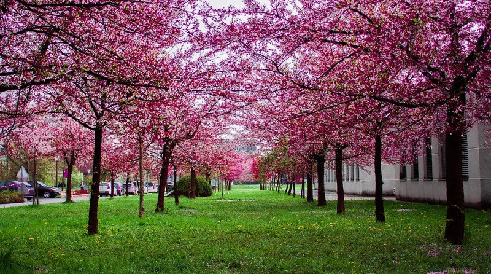
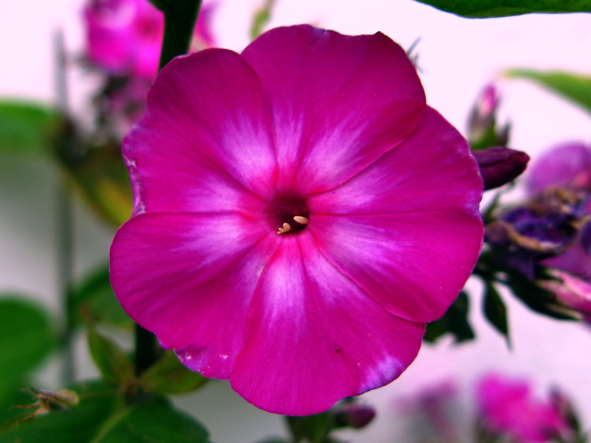

Redes sociales
¿Qué significa el color magenta en Psicología?
El magenta es un color primario, fundamental para poder hacer toda la gama de colores combinándose con el amarillo y el cián. Su tinte artificial fue descubierto en el siglo XIX y, desde entonces, ha sido muy usado en varios ámbitos, yendo desde lo místico y espiritual hasta el mundo más práctico y convencional del marketing. Es un color cálido pero no furioso ni flamígero, que transmite cierta calma sin dejar de lado la pasión e impulsividad. Veamos un poco más a fondo qué significa el color magenta en Psicología y en otros ámbitos donde es usado.
¿Cuál es el significado del color magenta?
El color magenta es uno de los colores primarios en el modelo CMYK (siglas en inglés de cian, magenta, amarillo y color clave o negro), un sistema sustractivo de colores. A partir de este, el cian y el amarillo se pueden obtener los colores secundarios de este modelo: azul, rojo y verde. A partir de estos seis, se obtienen el resto de colores. Este sistema de color es muy usado en la actualidad en el mundo de la impresión doméstica y profesional, además de en pintura artística y se fabrica a aprtir de quinacridonas.
El color magenta está compuesto de dos longitudes de onda: la roja y la violeta, dos colores que se encuentran en los extremos del espectro visible. Cuando vemos simultáneamente longitudes de onda de 380 nm (violeta) y 740 nm (rojo), nuestro cerebro interpreta y se inventa, por así decirlo, un color entre el violeta y el rojo, dando lugar al magenta.
El magenta también recibe el nombre de fucsia, rosado intenso y otros nombres que pueden dar a confusión pensando en tonalidades que pueden tener ápices de cian y amarillo, es decir, que no son puros. Recibe el nombre de magenta porque su tinte artificial fue descubierto cuando se libró la Batalla de Magenta (1859), cerca de la ciudad italiana homónima.

Principales significados de este color
El significado del color magenta cambia de cultura en cultura, aunque generalmente se le atribuye espiritualidad, bondad, compasión y ayuda. Otros significados atribuidos a este tono son:
- Imaginación
- Pasión
- Transformación
- Creatividad
- Innovación
- Balance y equilibrio
También características negativas de personalidad:
- Indignidad
- Inconformidad
- Falta de seriedad y excesiva distensión (“flippancy”)
- Impulsividad
- Excentricidad
Al magenta se le atribuye equilibrio emocional y armonía física. Es considerado como un color sofisticado, pero pragmático, evocando lógica y perspicacia. Se relaciona con sentimientos de autoestima y satisfacción personal y, también, con la superación y transformación, dejando atrás viejas ideas y abrazando nuevas. Como se lo relaciona con el rojo, es en cierta medida escandaloso y chocante, muy innovador e imaginativo dependiendo del contexto.
¿Qué dice la psicología del color de este color?
De acuerdo con la psicología del color, el magenta tiene efectos enternecedores, y por ello es usado para reducir la ira y rabia, a diferencia del rojo, que puede provocarlos.
Evoca también un sentimiento similar al amor correspondido y aumenta el sentimiento de esperanza, pureza e intuición. Suele tener efectos positivos en las personas que se sienten frustradas, preocupadas, desanimadas o enfadadas pues ayuda a aliviar sentimientos negativos. Es capaz de infundir vigor y aumenta la energía siempre que se use en un tono lo suficientemente suave para no inducir los efectos que genera el color rojo, de mayor intensidad. De usarse el tono desacertado o usar directamente rojo, puede romper por completo la calma de quien lo vea y, si tiene un mal día, inducir a la rabia, la sobreexcitación y, posteriormente, la fatiga psicológica.
¿Qué dice el color magenta de tu personalidad?
Hay quienes atribuyen rasgos de personalidad determinados a las personas que les gusta el color magenta. No deja de ser una creencia mística, una superstición como la astrología, pero resulta interesante descubrir que se dice de la personalidad de los que tienen al magenta como su color favorito. Entre las características que se le atribuyen a las personas que les chifla el magenta tenemos.
- Ser personas de rebosante alegría con los demás.
- Gran autoestima y seguridad en las capacidades propias.
- Ser muy espirituales, creyentes en el karma, el Feng Shui y las auras.
- Saber disfrutar de las pequeñas cosas.
- Gran motivación por prácticamente cualquier proyecto.
- Apasionados en el amor, dándolo todo en la relación.
- Extremadamente cuidadoso en los detalles, metódico y estricto a niveles maniáticos.
Magenta en el marketing
El color magenta, al ser un color primario, es muy útil en el mundo del marketing y bien podría decirse de él que es un fundamental en este ámbito. Suele ser muy usado en productos femeninos debido a la asociación cultural de que lo rojo y rosado es un color propio de las mujeres, en contraposición con el azul y, en menor medida, el verde, colores masculinos. El magenta tiene efectos enternecedores y, dejando de lado el evidente sexismo de que se atribuya este rasgo a las mujeres, es asociado con lo femenino.
Fuera de los productos femeninos, el color magenta es también muy usado. Este color puede transmitir sensación de entusiasmo, vitalidad y puede estar asociada a conceptos como la audacia, el individualismo y hasta lo dramático. Es especialmente usado en campos artísticos y creativos, por artistas, diseñadores de vestuarios, escenógrafos, escritores, fotógrafos, inventores y comerciantes de arte.
También es muy recurrente en el mundo de las nuevas tecnologías, incluyéndolo en servicios y productos enfocados a sectores masculinos pues, a pesar de seguir siendo muy asociado a lo femenino, cada vez son más las marcas que se atreven a usarlo para llamar la atención de los hombres. Es un color llamativo, ningún negocio que lo use pasará desapercibido, y no duele a la vista a diferencia del amarillo o azul chillón que, a veces, son usados en exceso. Las redes sociales lo están usando cada vez más, sobre todo porque la juventud se está liberando del binomio rosa/magenta = femenino. Un ejemplo de red social que usa todos magentas es Instagram en su logotipo.
El magenta en la decoración
En cuanto al ámbito de la decoración, el magenta es usado especialmente por su calidez, teniendo tonalidades que van desde el color morado hasta el rosa palo. Suele ser usado en las zonas de entrada para que los invitados sientan una cálida bienvenida. También se puede usar en dormitorios por dar una sensación amable y protectora, aunque no es nada recomendable en lugares como la oficina o el escritorio porque puede desconcentrar e impedir el estudio.
